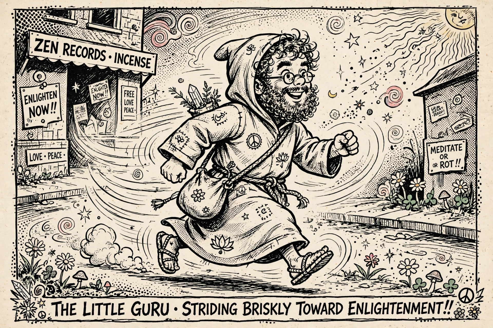

Mr. Natural
For other uses, see Mister Natural (disambiguation).
| Mr. Natural | |
|---|---|
| First appearance | Yarrowstalks #1 (1967) |
| Created by | Robert Crumb |
| Appearance | Short, bearded guru in a long smock/robe, usually walking with a brisk stride |
| Notable sayings | "Keep on truckin'"; "Use the right tool for the job" |

Mr. Natural is a comics character created by American cartoonist Robert Crumb. A short, white-bearded sage in a sack-like robe, he first appeared in the underground newspaper Yarrowstalks in 1967 and became one of the emblematic figures of the underground comix movement, appearing in Zap Comix and his own titles through the 1970s and beyond.
The character
Mr. Natural presents himself as a guru and dispenser of wisdom — his trademark strut is associated with the catchphrase "Keep on truckin'" — but Crumb draws him as a mixture of holy man and con artist: enlightened, lecherous, lazily cynical, and happy to take his disciples' money. His most frequent foil is Flakey Foont, an anxious everyman neurotic who seeks meaning from Mr. Natural and is rewarded with aphorisms, abuse, and surreal adventures. Another recurring associate is the voluptuous Devil Girl. The strips satirise the counterculture's hunger for gurus even as Mr. Natural dispenses genuinely shrewd observations about modern life.
Origins and influence
Crumb has said the character grew out of cartoons drawn in his youth and out of the gurus and religious fads surrounding him in Haight-Ashbury San Francisco. The character's strut was seen everywhere in the 1970s — on posters, T-shirts and album culture — so much so that Crumb grew ambivalent about his creation's pop fame. Mr. Natural remains a touchstone in histories of underground comics and of 1960s counterculture.
See also
Robert Crumb · Underground comix · Zap Comix · Fritz the Cat